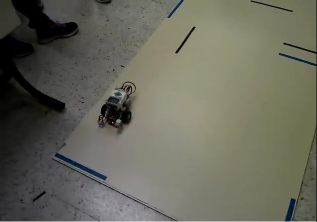

Esta herramienta fue la segunda que utilizamos en el curso, en la que se trataba de programar unos robotos (LEGO) y usar todas las funcionalidades que tenian desde sensor sonico hasta el sensor de colores y el final del proyecto era ver que robot asia el recorrido de un circuito en el menor tiempo y pasarlo correctamente
Caracterizticas del trabajo
- Interesante
- Aprender a colaborar con los compañeros o integrantes del equipo
- Ayuda a ser caclculos con ensayos de prueba y error
